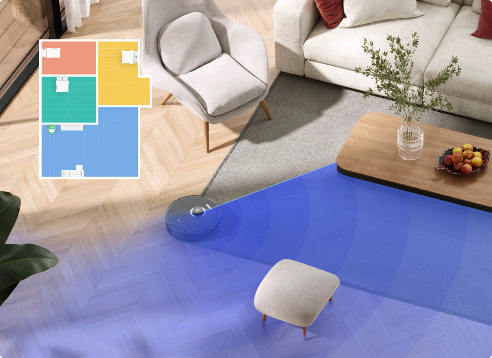
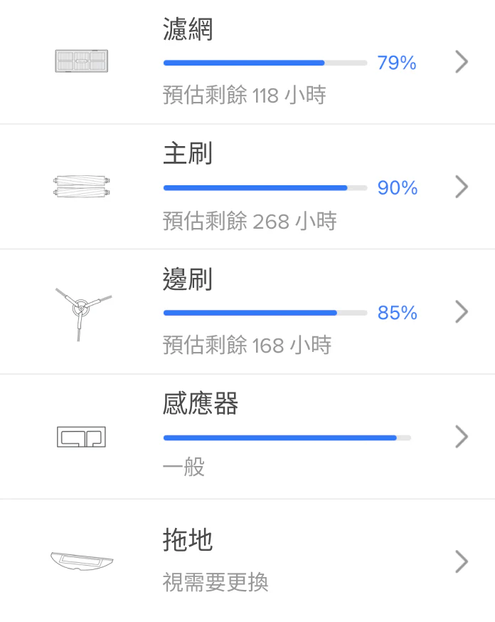

Roborock 扫地机 App 快问快答：新用户最该知道的十件事
刚入 Roborock 扫地机的朋友常被 App 功能、建图流程和耗材保养绕晕，这里整理一组速查问答，从开箱到长期使用一站式讲清。
整理一篇关于 Roborock 扫地机 App 的快问快答——新用户上手最常碰的几个问题，一次说透。
Q1：Roborock 到底是什么？适合谁用？
一句话：Roborock（石头）是目前国内市场占有率数一数二的激光导航扫地机器人品牌，从千元入门到旗舰自动集尘型号都有覆盖，配套的 Roborock App 是整个生态的操控中枢。适合家里有猫有狗、长发满地、或者单纯不想再弯腰扫地的人群，大户型和复式家庭尤其能体会到自动化带来的省心。它的官网和各个渠道都能查到完整的机型谱系，从入门到旗舰挑选起来很直观。
Q2：新机器到手，第一步该干啥？
先装好 App 从下载拿安装包，配网成功后也别直接点清扫。正确顺序是：配网成功 → 先查固件更新 → 确认版本号跑到最新 → 插在充电座上跑一次快速建图。很多连接掉线、清扫绕障异常、地图功能缺失之类的小问题，在较新的固件里早就修掉了，带着旧固件踩坑纯属浪费时间。固件更新期间有三条纪律必须遵守：机器人停在充电座上别搬它、别按机身按键、别重启路由器。App 端和固件端是两条独立的更新线，两端都保持最新，新功能才对得上。
Q3：快速建图和常规清扫有啥区别？
快速建图模式的任务只有一个：把你家的户型画出来，不认真吸尘拖地。速度比传统边扫边建快数倍，一居室十几分钟就能跑完，大平层或复式会久一些。很多人第一次跑建图看到地面没变干净就以为机器出问题了——这是模式设计如此，不是偷懒。建完图先在 App 里核对房间分割是否正确、门洞有没有被画成墙、阳台有没有漏掉，确认无误后再发起正式清扫。

Q4：地图那三种视图（2D/3D/Matrix）怎么选？
同一张户型图，App 用三种方式渲染，功能上没有任何差别——禁区、房间、清扫记录全部通用，差别只在「看图的感觉」。2D 是日常主力：彩色分区的平面户型图，选区、划区、画禁区都在这层做，房间边界最清楚。3D 给家人介绍「它怎么理解你家」最直观，立体微缩模型连家具位置都能看出来，但老机型上渲染稍卡。Matrix 是灰度网格质感，省电又清爽，渲染负担最小。三种视图随时切换，共享同一份地图数据，不会丢任何编辑内容。
Q5：主刷缠毛了怎么办？耗材保养要注意啥？
主刷是缠毛重灾区，长发家庭每两周必须查一次。保养细节在roborock文档里有图解，保养姿势总结一个字：拆。装在机器上永远洗不干净。具体操作：卡扣打开主刷护盖，取下主刷，用附赠的割刀沿凹槽把毛发割断拉出。边刷是最便宜的易损件，边缘变形扫不到墙角就该换，掀起来拧下固定螺丝即可，装回时对准卡口——别用热水烫，会让刷毛永久变形。拖布的原则是洗得勤比换得勤重要：每次任务后取下冲洗拧干晾通风处，每周机洗或手洗一次去油脂，洗后仍发硬发灰才需要换。

Q6：有哪些容易踩的小坑？
三个最容易忽略的细节：一是传感器别用酒精湿巾擦——悬崖传感器、沿墙传感器用干布轻擦就行，酒精残液会让传感器误判，防跌落灵敏度和贴墙效果直接受影响。二是拖布贴不平整会导致划区拖地留白边，补水时顺手检查出水口通畅。三是快速建图完成后务必核对地图，带着错图清扫，选区和划区都会跟着错，后面修地图又得花一番功夫。
Q7：App 本身好用吗？和同类比怎么样？
Roborock App 的功能完整度在行业内属于第一梯队：地图编辑、禁区设置、房间拆分、定时清扫、耗材倒计时、多楼层管理、语音助手联动全部覆盖。界面走的是简洁路线，主页面就是地图 + 清扫按钮，没有乱七八糟的广告和诱导入口。国内访问速度也稳定，毕竟服务器主要在国内。唯一可能让新手懵的是快速建图和常规清扫的区别——官方默认新机型首次添加会自动引导快速建图，但老用户换机时容易跳过这步。
Q8：值不值得长期用？
值得。一台 Roborock 扫地机正常使用寿命在三到五年以上，耗材（主刷、边刷、拖布、滤网）成本每月几十块钱，对比每天手动清扫花掉的时间和精力，这笔账怎么算都划算。核心逻辑很简单：机器替你干重复性体力活，你省下来的时间做别的。只要养成定期拆洗耗材、保持固件更新、地图及时维护这三个小习惯，它会是家里最靠谱的隐形助手。
最后一句：如果你家还没有一台自动清扫的激光导航扫地机，Roborock 是闭眼入不踩雷的选项之一。
这套资料的仓库镜像我同时维护了三份：GitHub 适合海外访问，Gitee 和 GitCode 国内访问更顺畅，按你习惯选一个就行。